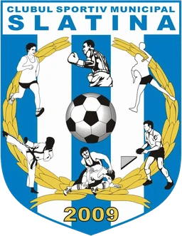

Introdu codul PIN de administrator pentru a gestiona rezervările.
| Ref | Data | Ora | Teren | Client | Telefon | Status |
|---|
Nicio rezervare care să se potrivească filtrelor.
Mod demonstrativ: datele sunt stocate în browserul curent (localStorage). Pentru un sistem multi-dispozitiv este necesar un backend (Firebase/Supabase/API propriu) — punctul de integrare este js/padel-store.js.